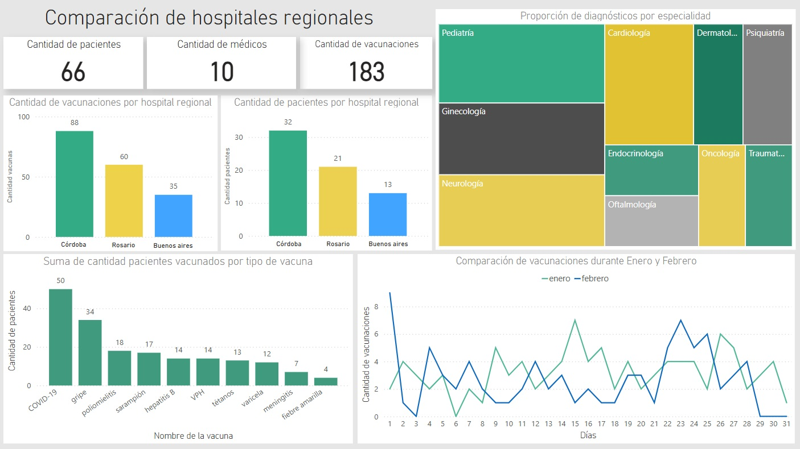

Dashboard de comparativa hospitales regionales

Dashboard acerca de tres hospitales regionales
Dashboard sobre datos de tres hospitales regionales, esta vez utilizando Power BI y SQL desde DBeaver, con datos
de una base de datos propia.
En este dashboard se pueden ver comparaciones acerca de:
• Pacientes
• Médicos
• Diagnósticos
• Vacunaciones
• Especialidades de los médicos
• Vacunaciones entre los meses de Enero y Febrero
• Cantidad de pacientes y vacunaciones por hospital regional
• Cantidad de pacientes que recibieron cada vacuna